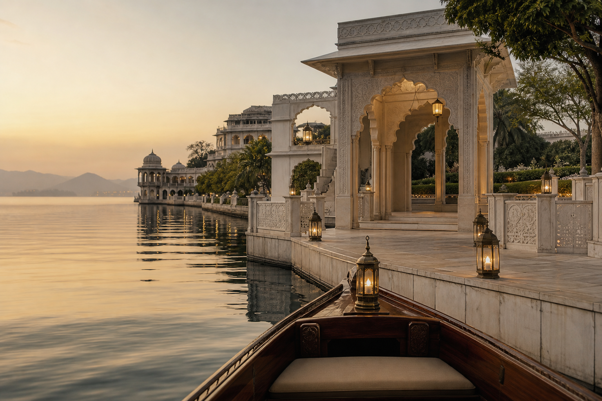
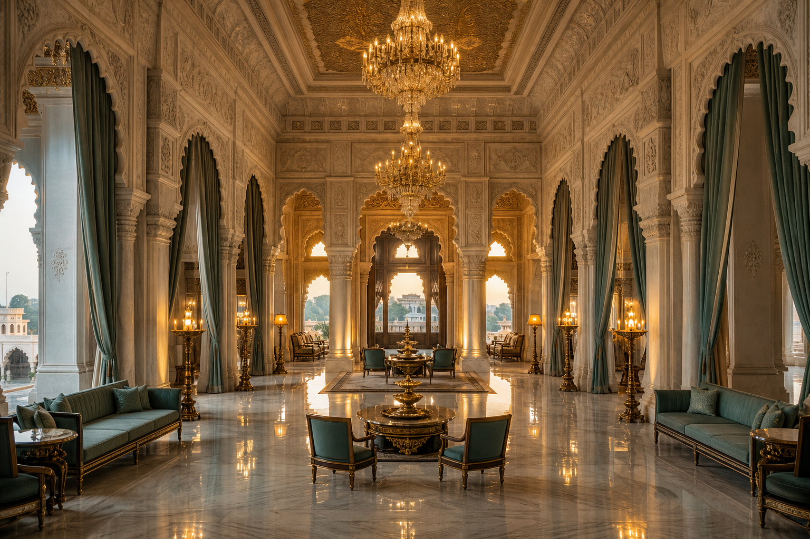
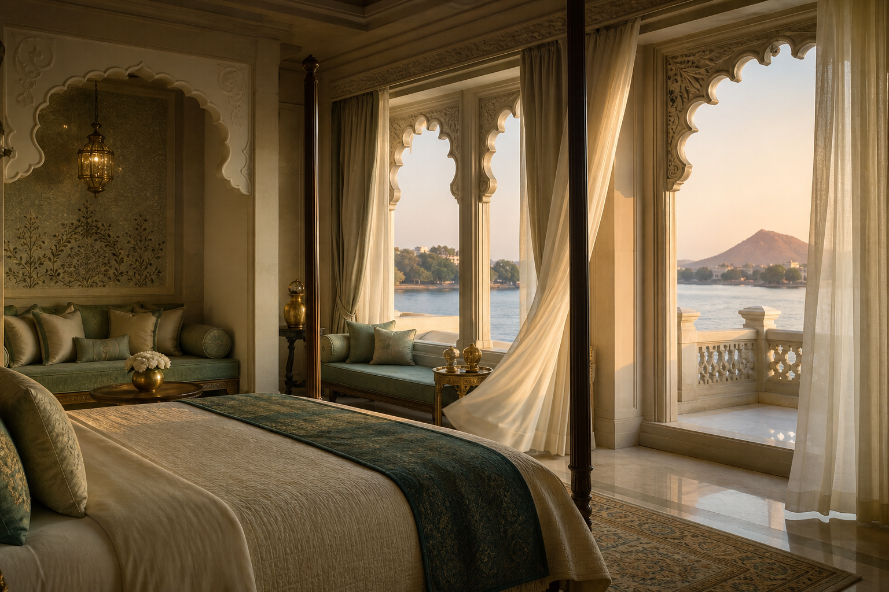
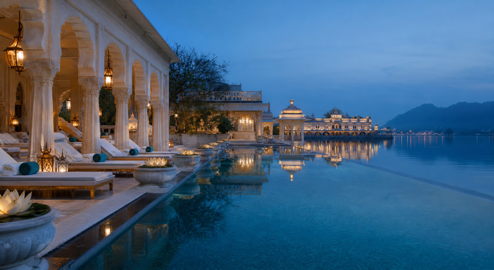
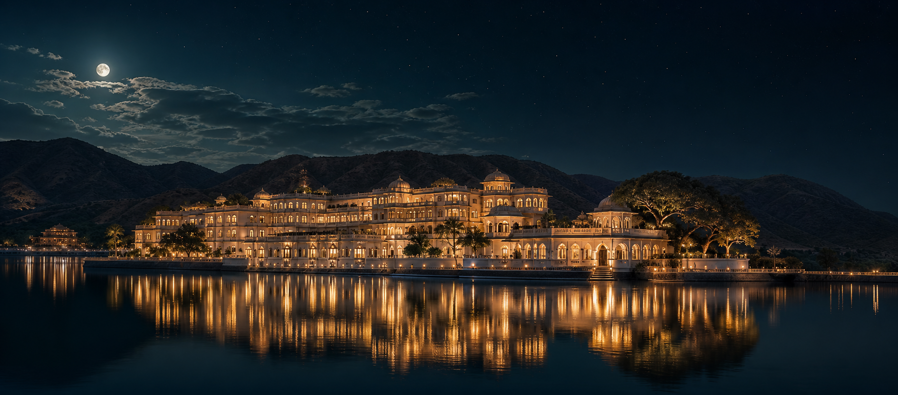

Precision Through Scroll
Apple-inspired pacing informed the idea of revealing one strong message at a time with clean transitions, confident scale, and disciplined hierarchy.

Flagship Case Study
A cinematic digital destination for a fictional ultra-luxury Indian lake palace hotel.
The Rajmahal Palace is a fictional ultra-luxury Indian lake palace hotel. The website was conceived as a digital arrival ritual: calm, cinematic, editorial, and emotionally paced through scroll.
It exists for discerning luxury travellers, destination wedding planners, and high-value guests who need to feel the atmosphere before they ever make an enquiry. The business goal was to increase perceived exclusivity and booking intent. The creative goal was to transform a hotel website into a story of place, heritage, and quiet indulgence.
Every section was designed as a scene, not a static content block.
Whitespace, restraint, and pacing carry the premium brand signal.
Motion, imagery, and layout were planned with responsive performance in mind.
Most hotel websites rely on predictable image grids, room cards, amenity lists, and booking prompts. They communicate information, but they rarely create desire.
The challenge was to use scrolling as a cinematic narrative device: revealing the palace slowly, pacing each space like a film sequence, and balancing visual drama with the practical clarity a real hospitality brand needs.
The research stage focused on how premium digital products create anticipation without visual noise.
Apple-inspired pacing informed the idea of revealing one strong message at a time with clean transitions, confident scale, and disciplined hierarchy.
Aman's sense of calm influenced the restrained copy, large whitespace, warm imagery, and premium hospitality tone.
Editorial systems shaped the oversized headings, asymmetrical layouts, captions, and moments where imagery is allowed to breathe.
Awwwards-style references informed the motion language: cinematic reveals, parallax depth, horizontal image movement, and hover details with purpose.
Collected references around lake palaces, marble textures, candlelight, quiet resorts, and premium editorial spreads.
Mapped the story as a sequence: arrival, rooms, rituals, amenities, and final booking intent.
Used large, confident headings with readable body copy to balance grandeur and usability.
Built around ivory marble, charcoal blue, deep teal water, sage accents, and warm gold light.
Designed with wide editorial columns, asymmetric image placement, and generous responsive spacing.
Motion was reserved for storytelling: revealing scenes, guiding attention, and deepening spatial immersion.
Reduced interface chrome so imagery, type, and atmosphere could carry the experience.
Created a polished responsive system for hero, arrival, suites, dining, gallery, and inquiry sections.
The identity system avoids loud decoration. Instead, it uses soft contrast, deliberate spacing, refined teal and ivory pairings, and editorial pacing to communicate exclusivity.
The development approach kept the architecture simple, readable, and portfolio-friendly while allowing the experience to feel cinematic.
Semantic sections, accessible landmarks, descriptive image alt text, and clear content order.
Responsive editorial grids, fluid spacing, custom properties, and reduced-motion fallbacks.
Progressive enhancements for cursor, scroll progress, reveal states, and smooth interactions.
ScrollTrigger and Lenis support pinned storytelling, horizontal galleries, and smooth scroll when available.
Assets remain inside images, global CSS stays intact, and the case study has dedicated CSS and JS files.
Readable contrast, keyboard-friendly links, meaningful labels, and motion preferences are respected.
Introduces the palace with a slow image scale and type reveal to create a ceremonial first impression.
Large headings enter in staggered lines so the story feels composed and premium.
Key moments hold in place long enough for the user to absorb the scene before moving on.
Planned as a scroll-linked sequence for future brand films, with image parallax used as a lightweight portfolio-safe substitute.
The gallery moves laterally to mimic a curated editorial spread and slow down the viewing rhythm.
Subtle image movement creates spatial depth without compromising readability.
Primary links respond gently to pointer movement, making interactions feel crafted.
A refined cursor reinforces the bespoke nature of the experience on larger screens.
Soft reveals preserve the calm luxury tone while keeping the story alive.
Cards lift with restrained borders and glow so the UI feels tactile, not noisy.
Lazy loading: Non-critical gallery images load only when needed.
Intersection Observer: Reveal classes are applied progressively without heavy scroll listeners.
Video optimization: The planned video system uses poster-first loading and compressed short loops.
Reduced motion: Motion-sensitive users receive a calm, readable experience.
Safari compatibility: Effects avoid brittle filters and provide standard fallbacks.
Lighthouse optimization: Image sizing, semantic markup, and script checks keep the page production-ready.
Responsive optimization: Large compositions collapse into focused mobile sequences without losing hierarchy.





The result is an immersive hospitality experience that combines cinematic storytelling, luxury interaction, responsive editorial layouts, and high-performance frontend execution.
Every scroll moment is designed to guide the guest deeper into the palace: from first arrival to interiors, amenities, atmosphere, and final emotional memory.
Luxury motion needs slower pacing, gentler easing, and fewer competing elements.
Large imagery can feel premium only when asset loading and scroll work remain disciplined.
Keeping case-study styles isolated protects the wider portfolio from accidental regressions.
Refinement comes from proportion, restraint, contrast, and confidence in empty space.
Desktop spectacle must translate into a focused, readable mobile story.
Strong projects become stronger when the case study explains intention, process, and outcome.